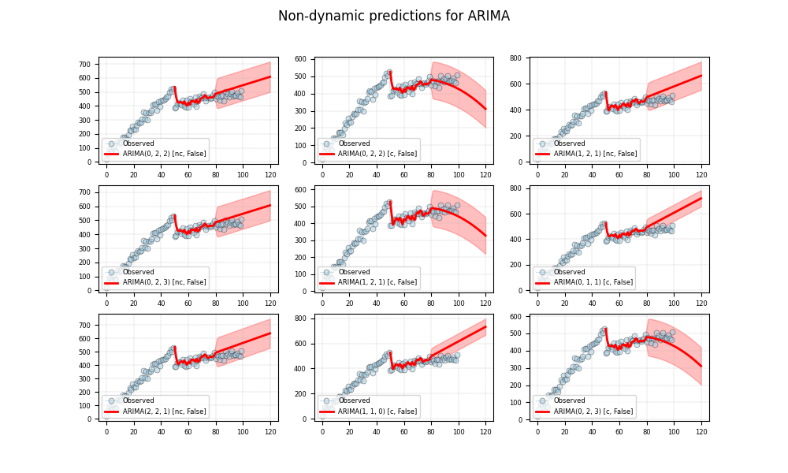

Note
Click here to download the full example code
ARIMA - Search
Out:
4/128. ARIMA(0, 1, 1) [c, False] ... failed: In models with integration (`d > 0`) or seasonal integration (`D > 0`), trend terms of lower order than `d + D` cannot be (as they would be eliminated due to the differencing operation). For example, a constant cannot be included in an ARIMA(1, 1, 1) model, but including a linear trend, which would have the same effect as fitting a constant to the differenced data, is allowed.
8/128. ARIMA(1, 3, 2) [c, False] ... failed: In models with integration (`d > 0`) or seasonal integration (`D > 0`), trend terms of lower order than `d + D` cannot be (as they would be eliminated due to the differencing operation). For example, a constant cannot be included in an ARIMA(1, 1, 1) model, but including a linear trend, which would have the same effect as fitting a constant to the differenced data, is allowed.
12/128. ARIMA(0, 1, 2) [c, False] ... failed: In models with integration (`d > 0`) or seasonal integration (`D > 0`), trend terms of lower order than `d + D` cannot be (as they would be eliminated due to the differencing operation). For example, a constant cannot be included in an ARIMA(1, 1, 1) model, but including a linear trend, which would have the same effect as fitting a constant to the differenced data, is allowed.
16/128. ARIMA(1, 3, 1) [c, False] ... failed: In models with integration (`d > 0`) or seasonal integration (`D > 0`), trend terms of lower order than `d + D` cannot be (as they would be eliminated due to the differencing operation). For example, a constant cannot be included in an ARIMA(1, 1, 1) model, but including a linear trend, which would have the same effect as fitting a constant to the differenced data, is allowed.
18/128. ARIMA(0, 1, 3) [c, False] ... failed: In models with integration (`d > 0`) or seasonal integration (`D > 0`), trend terms of lower order than `d + D` cannot be (as they would be eliminated due to the differencing operation). For example, a constant cannot be included in an ARIMA(1, 1, 1) model, but including a linear trend, which would have the same effect as fitting a constant to the differenced data, is allowed.
22/128. ARIMA(3, 3, 1) [c, False] ... failed: In models with integration (`d > 0`) or seasonal integration (`D > 0`), trend terms of lower order than `d + D` cannot be (as they would be eliminated due to the differencing operation). For example, a constant cannot be included in an ARIMA(1, 1, 1) model, but including a linear trend, which would have the same effect as fitting a constant to the differenced data, is allowed.
24/128. ARIMA(1, 3, 0) [c, False] ... failed: In models with integration (`d > 0`) or seasonal integration (`D > 0`), trend terms of lower order than `d + D` cannot be (as they would be eliminated due to the differencing operation). For example, a constant cannot be included in an ARIMA(1, 1, 1) model, but including a linear trend, which would have the same effect as fitting a constant to the differenced data, is allowed.
26/128. ARIMA(2, 3, 0) [c, False] ... failed: In models with integration (`d > 0`) or seasonal integration (`D > 0`), trend terms of lower order than `d + D` cannot be (as they would be eliminated due to the differencing operation). For example, a constant cannot be included in an ARIMA(1, 1, 1) model, but including a linear trend, which would have the same effect as fitting a constant to the differenced data, is allowed.
28/128. ARIMA(3, 3, 0) [c, False] ... failed: In models with integration (`d > 0`) or seasonal integration (`D > 0`), trend terms of lower order than `d + D` cannot be (as they would be eliminated due to the differencing operation). For example, a constant cannot be included in an ARIMA(1, 1, 1) model, but including a linear trend, which would have the same effect as fitting a constant to the differenced data, is allowed.
30/128. ARIMA(0, 2, 1) [c, False] ... failed: In models with integration (`d > 0`) or seasonal integration (`D > 0`), trend terms of lower order than `d + D` cannot be (as they would be eliminated due to the differencing operation). For example, a constant cannot be included in an ARIMA(1, 1, 1) model, but including a linear trend, which would have the same effect as fitting a constant to the differenced data, is allowed.
32/128. ARIMA(2, 3, 1) [c, False] ... failed: In models with integration (`d > 0`) or seasonal integration (`D > 0`), trend terms of lower order than `d + D` cannot be (as they would be eliminated due to the differencing operation). For example, a constant cannot be included in an ARIMA(1, 1, 1) model, but including a linear trend, which would have the same effect as fitting a constant to the differenced data, is allowed.
34/128. ARIMA(3, 3, 3) [c, False] ... failed: In models with integration (`d > 0`) or seasonal integration (`D > 0`), trend terms of lower order than `d + D` cannot be (as they would be eliminated due to the differencing operation). For example, a constant cannot be included in an ARIMA(1, 1, 1) model, but including a linear trend, which would have the same effect as fitting a constant to the differenced data, is allowed.
36/128. ARIMA(0, 2, 0) [c, False] ... failed: In models with integration (`d > 0`) or seasonal integration (`D > 0`), trend terms of lower order than `d + D` cannot be (as they would be eliminated due to the differencing operation). For example, a constant cannot be included in an ARIMA(1, 1, 1) model, but including a linear trend, which would have the same effect as fitting a constant to the differenced data, is allowed.
38/128. ARIMA(2, 3, 2) [c, False] ... failed: In models with integration (`d > 0`) or seasonal integration (`D > 0`), trend terms of lower order than `d + D` cannot be (as they would be eliminated due to the differencing operation). For example, a constant cannot be included in an ARIMA(1, 1, 1) model, but including a linear trend, which would have the same effect as fitting a constant to the differenced data, is allowed.
40/128. ARIMA(3, 3, 2) [c, False] ... failed: In models with integration (`d > 0`) or seasonal integration (`D > 0`), trend terms of lower order than `d + D` cannot be (as they would be eliminated due to the differencing operation). For example, a constant cannot be included in an ARIMA(1, 1, 1) model, but including a linear trend, which would have the same effect as fitting a constant to the differenced data, is allowed.
42/128. ARIMA(0, 2, 3) [c, False] ... failed: In models with integration (`d > 0`) or seasonal integration (`D > 0`), trend terms of lower order than `d + D` cannot be (as they would be eliminated due to the differencing operation). For example, a constant cannot be included in an ARIMA(1, 1, 1) model, but including a linear trend, which would have the same effect as fitting a constant to the differenced data, is allowed.
44/128. ARIMA(2, 3, 3) [c, False] ... failed: In models with integration (`d > 0`) or seasonal integration (`D > 0`), trend terms of lower order than `d + D` cannot be (as they would be eliminated due to the differencing operation). For example, a constant cannot be included in an ARIMA(1, 1, 1) model, but including a linear trend, which would have the same effect as fitting a constant to the differenced data, is allowed.
46/128. ARIMA(0, 2, 2) [c, False] ... failed: In models with integration (`d > 0`) or seasonal integration (`D > 0`), trend terms of lower order than `d + D` cannot be (as they would be eliminated due to the differencing operation). For example, a constant cannot be included in an ARIMA(1, 1, 1) model, but including a linear trend, which would have the same effect as fitting a constant to the differenced data, is allowed.
48/128. ARIMA(3, 2, 2) [c, False] ... failed: In models with integration (`d > 0`) or seasonal integration (`D > 0`), trend terms of lower order than `d + D` cannot be (as they would be eliminated due to the differencing operation). For example, a constant cannot be included in an ARIMA(1, 1, 1) model, but including a linear trend, which would have the same effect as fitting a constant to the differenced data, is allowed.
52/128. ARIMA(3, 1, 3) [c, False] ... failed: In models with integration (`d > 0`) or seasonal integration (`D > 0`), trend terms of lower order than `d + D` cannot be (as they would be eliminated due to the differencing operation). For example, a constant cannot be included in an ARIMA(1, 1, 1) model, but including a linear trend, which would have the same effect as fitting a constant to the differenced data, is allowed.
54/128. ARIMA(3, 2, 3) [c, False] ... failed: In models with integration (`d > 0`) or seasonal integration (`D > 0`), trend terms of lower order than `d + D` cannot be (as they would be eliminated due to the differencing operation). For example, a constant cannot be included in an ARIMA(1, 1, 1) model, but including a linear trend, which would have the same effect as fitting a constant to the differenced data, is allowed.
56/128. ARIMA(0, 3, 2) [c, False] ... failed: In models with integration (`d > 0`) or seasonal integration (`D > 0`), trend terms of lower order than `d + D` cannot be (as they would be eliminated due to the differencing operation). For example, a constant cannot be included in an ARIMA(1, 1, 1) model, but including a linear trend, which would have the same effect as fitting a constant to the differenced data, is allowed.
58/128. ARIMA(1, 2, 0) [c, False] ... failed: In models with integration (`d > 0`) or seasonal integration (`D > 0`), trend terms of lower order than `d + D` cannot be (as they would be eliminated due to the differencing operation). For example, a constant cannot be included in an ARIMA(1, 1, 1) model, but including a linear trend, which would have the same effect as fitting a constant to the differenced data, is allowed.
64/128. ARIMA(3, 1, 2) [c, False] ... failed: In models with integration (`d > 0`) or seasonal integration (`D > 0`), trend terms of lower order than `d + D` cannot be (as they would be eliminated due to the differencing operation). For example, a constant cannot be included in an ARIMA(1, 1, 1) model, but including a linear trend, which would have the same effect as fitting a constant to the differenced data, is allowed.
66/128. ARIMA(3, 2, 0) [c, False] ... failed: In models with integration (`d > 0`) or seasonal integration (`D > 0`), trend terms of lower order than `d + D` cannot be (as they would be eliminated due to the differencing operation). For example, a constant cannot be included in an ARIMA(1, 1, 1) model, but including a linear trend, which would have the same effect as fitting a constant to the differenced data, is allowed.
68/128. ARIMA(0, 3, 3) [c, False] ... failed: In models with integration (`d > 0`) or seasonal integration (`D > 0`), trend terms of lower order than `d + D` cannot be (as they would be eliminated due to the differencing operation). For example, a constant cannot be included in an ARIMA(1, 1, 1) model, but including a linear trend, which would have the same effect as fitting a constant to the differenced data, is allowed.
70/128. ARIMA(1, 2, 1) [c, False] ... failed: In models with integration (`d > 0`) or seasonal integration (`D > 0`), trend terms of lower order than `d + D` cannot be (as they would be eliminated due to the differencing operation). For example, a constant cannot be included in an ARIMA(1, 1, 1) model, but including a linear trend, which would have the same effect as fitting a constant to the differenced data, is allowed.
76/128. ARIMA(3, 1, 1) [c, False] ... failed: In models with integration (`d > 0`) or seasonal integration (`D > 0`), trend terms of lower order than `d + D` cannot be (as they would be eliminated due to the differencing operation). For example, a constant cannot be included in an ARIMA(1, 1, 1) model, but including a linear trend, which would have the same effect as fitting a constant to the differenced data, is allowed.
78/128. ARIMA(3, 2, 1) [c, False] ... failed: In models with integration (`d > 0`) or seasonal integration (`D > 0`), trend terms of lower order than `d + D` cannot be (as they would be eliminated due to the differencing operation). For example, a constant cannot be included in an ARIMA(1, 1, 1) model, but including a linear trend, which would have the same effect as fitting a constant to the differenced data, is allowed.
80/128. ARIMA(0, 3, 0) [c, False] ... failed: In models with integration (`d > 0`) or seasonal integration (`D > 0`), trend terms of lower order than `d + D` cannot be (as they would be eliminated due to the differencing operation). For example, a constant cannot be included in an ARIMA(1, 1, 1) model, but including a linear trend, which would have the same effect as fitting a constant to the differenced data, is allowed.
82/128. ARIMA(1, 2, 2) [c, False] ... failed: In models with integration (`d > 0`) or seasonal integration (`D > 0`), trend terms of lower order than `d + D` cannot be (as they would be eliminated due to the differencing operation). For example, a constant cannot be included in an ARIMA(1, 1, 1) model, but including a linear trend, which would have the same effect as fitting a constant to the differenced data, is allowed.
88/128. ARIMA(3, 1, 0) [c, False] ... failed: In models with integration (`d > 0`) or seasonal integration (`D > 0`), trend terms of lower order than `d + D` cannot be (as they would be eliminated due to the differencing operation). For example, a constant cannot be included in an ARIMA(1, 1, 1) model, but including a linear trend, which would have the same effect as fitting a constant to the differenced data, is allowed.
90/128. ARIMA(0, 3, 1) [c, False] ... failed: In models with integration (`d > 0`) or seasonal integration (`D > 0`), trend terms of lower order than `d + D` cannot be (as they would be eliminated due to the differencing operation). For example, a constant cannot be included in an ARIMA(1, 1, 1) model, but including a linear trend, which would have the same effect as fitting a constant to the differenced data, is allowed.
92/128. ARIMA(1, 2, 3) [c, False] ... failed: In models with integration (`d > 0`) or seasonal integration (`D > 0`), trend terms of lower order than `d + D` cannot be (as they would be eliminated due to the differencing operation). For example, a constant cannot be included in an ARIMA(1, 1, 1) model, but including a linear trend, which would have the same effect as fitting a constant to the differenced data, is allowed.
96/128. ARIMA(2, 1, 2) [c, False] ... failed: In models with integration (`d > 0`) or seasonal integration (`D > 0`), trend terms of lower order than `d + D` cannot be (as they would be eliminated due to the differencing operation). For example, a constant cannot be included in an ARIMA(1, 1, 1) model, but including a linear trend, which would have the same effect as fitting a constant to the differenced data, is allowed.
98/128. ARIMA(1, 1, 1) [c, False] ... failed: In models with integration (`d > 0`) or seasonal integration (`D > 0`), trend terms of lower order than `d + D` cannot be (as they would be eliminated due to the differencing operation). For example, a constant cannot be included in an ARIMA(1, 1, 1) model, but including a linear trend, which would have the same effect as fitting a constant to the differenced data, is allowed.
100/128. ARIMA(2, 2, 3) [c, False] ... failed: In models with integration (`d > 0`) or seasonal integration (`D > 0`), trend terms of lower order than `d + D` cannot be (as they would be eliminated due to the differencing operation). For example, a constant cannot be included in an ARIMA(1, 1, 1) model, but including a linear trend, which would have the same effect as fitting a constant to the differenced data, is allowed.
102/128. ARIMA(2, 1, 3) [c, False] ... failed: In models with integration (`d > 0`) or seasonal integration (`D > 0`), trend terms of lower order than `d + D` cannot be (as they would be eliminated due to the differencing operation). For example, a constant cannot be included in an ARIMA(1, 1, 1) model, but including a linear trend, which would have the same effect as fitting a constant to the differenced data, is allowed.
104/128. ARIMA(1, 1, 0) [c, False] ... failed: In models with integration (`d > 0`) or seasonal integration (`D > 0`), trend terms of lower order than `d + D` cannot be (as they would be eliminated due to the differencing operation). For example, a constant cannot be included in an ARIMA(1, 1, 1) model, but including a linear trend, which would have the same effect as fitting a constant to the differenced data, is allowed.
106/128. ARIMA(2, 2, 2) [c, False] ... failed: In models with integration (`d > 0`) or seasonal integration (`D > 0`), trend terms of lower order than `d + D` cannot be (as they would be eliminated due to the differencing operation). For example, a constant cannot be included in an ARIMA(1, 1, 1) model, but including a linear trend, which would have the same effect as fitting a constant to the differenced data, is allowed.
108/128. ARIMA(2, 1, 0) [c, False] ... failed: In models with integration (`d > 0`) or seasonal integration (`D > 0`), trend terms of lower order than `d + D` cannot be (as they would be eliminated due to the differencing operation). For example, a constant cannot be included in an ARIMA(1, 1, 1) model, but including a linear trend, which would have the same effect as fitting a constant to the differenced data, is allowed.
110/128. ARIMA(0, 1, 0) [c, False] ... failed: In models with integration (`d > 0`) or seasonal integration (`D > 0`), trend terms of lower order than `d + D` cannot be (as they would be eliminated due to the differencing operation). For example, a constant cannot be included in an ARIMA(1, 1, 1) model, but including a linear trend, which would have the same effect as fitting a constant to the differenced data, is allowed.
112/128. ARIMA(1, 1, 3) [c, False] ... failed: In models with integration (`d > 0`) or seasonal integration (`D > 0`), trend terms of lower order than `d + D` cannot be (as they would be eliminated due to the differencing operation). For example, a constant cannot be included in an ARIMA(1, 1, 1) model, but including a linear trend, which would have the same effect as fitting a constant to the differenced data, is allowed.
114/128. ARIMA(2, 2, 1) [c, False] ... failed: In models with integration (`d > 0`) or seasonal integration (`D > 0`), trend terms of lower order than `d + D` cannot be (as they would be eliminated due to the differencing operation). For example, a constant cannot be included in an ARIMA(1, 1, 1) model, but including a linear trend, which would have the same effect as fitting a constant to the differenced data, is allowed.
116/128. ARIMA(2, 1, 1) [c, False] ... failed: In models with integration (`d > 0`) or seasonal integration (`D > 0`), trend terms of lower order than `d + D` cannot be (as they would be eliminated due to the differencing operation). For example, a constant cannot be included in an ARIMA(1, 1, 1) model, but including a linear trend, which would have the same effect as fitting a constant to the differenced data, is allowed.
118/128. ARIMA(1, 1, 2) [c, False] ... failed: In models with integration (`d > 0`) or seasonal integration (`D > 0`), trend terms of lower order than `d + D` cannot be (as they would be eliminated due to the differencing operation). For example, a constant cannot be included in an ARIMA(1, 1, 1) model, but including a linear trend, which would have the same effect as fitting a constant to the differenced data, is allowed.
120/128. ARIMA(2, 2, 0) [c, False] ... failed: In models with integration (`d > 0`) or seasonal integration (`D > 0`), trend terms of lower order than `d + D` cannot be (as they would be eliminated due to the differencing operation). For example, a constant cannot be included in an ARIMA(1, 1, 1) model, but including a linear trend, which would have the same effect as fitting a constant to the differenced data, is allowed.
128/128. ARIMA(1, 3, 3) [c, False] ... failed: In models with integration (`d > 0`) or seasonal integration (`D > 0`), trend terms of lower order than `d + D` cannot be (as they would be eliminated due to the differencing operation). For example, a constant cannot be included in an ARIMA(1, 1, 1) model, but including a linear trend, which would have the same effect as fitting a constant to the differenced data, is allowed.
Summary:
arima-order arima-trend arima-aic arima-bic
0 (0, 2, 2) n 757.2235 764.2936
1 (1, 2, 1) n 757.897 764.9671
2 (1, 2, 2) n 758.7304 768.1573
3 (0, 2, 3) n 758.867 768.2939
4 (2, 2, 1) n 758.8815 768.3083
.. ... ... ... ...
67 (0, 0, 3) n 966.6819 976.21
68 (0, 0, 0) c 1014.5576 1019.3217
69 (0, 0, 2) n 1013.1619 1020.308
70 (0, 0, 1) n 1075.7365 1080.5005
71 (0, 0, 0) n 1170.9886 1173.3707
[72 rows x 4 columns]
0. Estimator (bic=764.29): ARIMA(0, 2, 2) [n, False]
1. Estimator (bic=764.97): ARIMA(1, 2, 1) [n, False]
2. Estimator (bic=768.16): ARIMA(1, 2, 2) [n, False]
3. Estimator (bic=768.29): ARIMA(0, 2, 3) [n, False]
4. Estimator (bic=768.31): ARIMA(2, 2, 1) [n, False]
5. Estimator (bic=768.94): ARIMA(1, 3, 2) [n, False]
6. Estimator (bic=769.01): ARIMA(0, 3, 3) [n, False]
7. Estimator (bic=770.12): ARIMA(1, 1, 0) [n, False]
8. Estimator (bic=772.09): ARIMA(0, 1, 1) [n, False]
6 # Import.
7 import sys
8 import warnings
9 import pandas as pd
10 import matplotlib as mpl
11 import matplotlib.pyplot as plt
12
13 # Import ARIMA from statsmodels.
14 from statsmodels.tsa.arima.model import ARIMA
15
16 # import weights.
17 from pyamr.datasets.load import make_timeseries
18 from pyamr.core.regression.arima import ARIMAWrapper
19
20 # Filter warnings
21 warnings.simplefilter(action='ignore', category=FutureWarning)
22
23 # ----------------------------
24 # set basic configuration
25 # ----------------------------
26 # Matplotlib options
27 mpl.rc('legend', fontsize=6)
28 mpl.rc('xtick', labelsize=6)
29 mpl.rc('ytick', labelsize=6)
30
31 # Set pandas configuration.
32 pd.set_option('display.max_colwidth', 14)
33 pd.set_option('display.width', 150)
34 pd.set_option('display.precision', 4)
35
36 # ----------------------------
37 # create data
38 # ----------------------------
39 # Create timeseries data
40 x, y, f = make_timeseries()
41
42 # Create exogenous variable
43 exog = x
44
45 # Variables.
46 s, e = 50, 120
47
48 # -------------------------------
49 # create arima model
50 # -------------------------------
51 # This example shows how to use auto to find the best overall model using
52 # a particular seletion criteria. It also demonstrates how to plot the
53 # resulting data for visualization purposes. Note that it only prints
54 # the top best classifier according to the information criteria.
55
56 # Find the best arima model (bruteforce).
57 models, best = ARIMAWrapper(estimator=ARIMA) \
58 .auto(endog=y[:80], ic='bic', max_ar=3,
59 max_ma=3, max_d=3, return_fits=True)
60
61 # Sort the list (from lower to upper)
62 models.sort(key=lambda x: x.bic, reverse=False)
63
64 # Summary
65 summary = ARIMAWrapper().from_list_dataframe(models)
66
67 # Show summary
68 print("\nSummary:")
69 print(summary[['arima-order',
70 'arima-trend',
71 'arima-aic',
72 'arima-bic']])
73
74 # -------------------------------
75 # plot results
76 # -------------------------------
77 # Create figure
78 fig, axes = plt.subplots(3,3, figsize=(10,6))
79 axes = axes.flatten()
80
81 # Loop for the selected models
82 for i,estimator in enumerate(models[:9]):
83
84 # Show information
85 print("%2d. Estimator (bic=%.2f): %s " % \
86 (i, estimator.bic, estimator._identifier()))
87
88 # Get the predictions
89 preds = estimator.get_prediction(start=s, end=e, dynamic=False)
90
91 # Plot truth values.
92 axes[i].plot(y, color='#A6CEE3', alpha=0.5, marker='o',
93 markeredgecolor='k', markeredgewidth=0.5,
94 markersize=5, linewidth=0.75, label='Observed')
95
96 # Plot forecasted values.
97 axes[i].plot(preds[0,:], preds[1,:], color='#FF0000', alpha=1.00,
98 linewidth=2.0, label=estimator._identifier())
99
100 # Plot the confidence intervals.
101 axes[i].fill_between(preds[0,:], preds[2,:],
102 preds[3,:],
103 color='#FF0000',
104 alpha=0.25)
105
106 # Configure axes
107 axes[i].legend(loc=3)
108 axes[i].grid(True, linestyle='--', linewidth=0.25)
109
110 # Set superior title
111 plt.suptitle("Non-dynamic predictions for ARIMA")
112
113 # Show
114 plt.show()
Total running time of the script: ( 0 minutes 9.226 seconds)